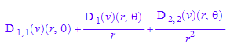
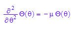

![(2*D([1], v)((x^2 + y^2)^(1/2),
arctan(y/x)))/(x^2 + y^2)^(1/2) + (D([2, 2], v)((x^2 +
y^2)^(1/2), arctan(y/x))/(x*(y^2/x^2 + 1)) + (y*D([1, 2],
v)((x^2 + y^2)^(1/2), arctan(y/x)))/(x^2 +
y^2)^(1/2))/(x*(y^2/x^2 + 1)) + (y*(D([1, 2], v)((x^2 +
y^2)^(1/2), arctan(y/x))/(x*(y^2/x^2 + 1)) + (y*D([1, 1],
v)((x^2 + y^2)^(1/2), arctan(y/x)))/(x^2 + y^2)^(1/2)))/(x^2 +
y^2)^(1/2) + (x*((x*D([1, 1], v)((x^2 + y^2)^(1/2),
arctan(y/x)))/(x^2 + y^2)^(1/2) - (y*D([1, 2], v)((x^2 +
y^2)^(1/2), arctan(y/x)))/(x^2*(y^2/x^2 + 1))))/(x^2 +
y^2)^(1/2) - (x^2*D([1], v)((x^2 + y^2)^(1/2),
arctan(y/x)))/(x^2 + y^2)^(3/2) - (y^2*D([1], v)((x^2 +
y^2)^(1/2), arctan(y/x)))/(x^2 + y^2)^(3/2) - (y*((x*D([1, 2],
v)((x^2 + y^2)^(1/2), arctan(y/x)))/(x^2 + y^2)^(1/2) -
(y*D([2, 2], v)((x^2 + y^2)^(1/2), arctan(y/x)))/(x^2*(y^2/x^2
+ 1))))/(x^2*(y^2/x^2 + 1)) - (2*y^3*D([2], v)((x^2 +
y^2)^(1/2), arctan(y/x)))/(x^5*(y^2/x^2 + 1)^2) + (2*y*D([2],
v)((x^2 + y^2)^(1/2), arctan(y/x)))/(x^3*(y^2/x^2 + 1)) -
(2*y*D([2], v)((x^2 + y^2)^(1/2), arctan(y/x)))/(x^3*(y^2/x^2
+ 1)^2)](BesselMembrana_images/math4.png)
Vibraciones normales de una membrana
Esta notebook para Mupad lleva a la práctica el tema de funciones de Bessel y vibracones de membranas, ver Simmons página 388
1. Laplaciano en coordenadas polares
El laplaciano de una función
U:=u(x,y)
se define por
`Δ`*u=diff(diff(U, x), x)+diff(diff(U, y), y)
Como parte de esta actividad te recomendamos leer, además del libro de Simmons, el artículo de la Wikipedia relativo a la ecuación de ondas también el artículo sobre el laplaciano. En este artículo puedes ver en que se transforma el laplaciano en función de varios sistemas de coordenadas, en partícular coordenadas polares. En esta sección de la notebook derivamos la fórmula del laplacianos en coordenadas polares.
Para derivar esta fórmula supongamos que
eq:=u(x,y)=v(r,`θ`)
esto es, la función u (de x e y) se llama v cuando la representamos como función de las coordenadas polares. ¿En qué se transforma el laplaciano? Para contestar esto reemplazamos las coordenadas polares en función de x e y:
u:=v(sqrt(x^2+y^2),arctan(y/x))
Ahora calculamos el laplaciano de u
lapla:=diff(diff(u, x), x)+diff(diff(u, y), y)
Simplifiquemos un poco la expresión
lapla:=Simplify(lapla)
Ahora volavamos a las variables polares, antes es coveniente declarar eldominio de variación de estas variables
assume(r>0)
assume(`θ`>0)
assumeAlso(`θ`<2*PI)
Y la sustitución en concreto:
lapla:=subs(lapla,[x=r*cos(`θ`),y=r*sin(`θ`)])
![D([1, 1], v)((r^2*cos(`θ`)^2 +
r^2*sin(`θ`)^2)^(1/2),
arctan(sin(`θ`)/cos(`θ`))) + D([2, 2],
v)((r^2*cos(`θ`)^2 +
r^2*sin(`θ`)^2)^(1/2),
arctan(sin(`θ`)/cos(`θ`)))/(r^2*cos(`θ`)^2
+ r^2*sin(`θ`)^2) + (r^4*cos(`θ`)^4*D([1],
v)((r^2*cos(`θ`)^2 +
r^2*sin(`θ`)^2)^(1/2),
arctan(sin(`θ`)/cos(`θ`))))/(r^2*cos(`θ`)^2
+ r^2*sin(`θ`)^2)^(5/2) +
(r^4*sin(`θ`)^4*D([1], v)((r^2*cos(`θ`)^2
+ r^2*sin(`θ`)^2)^(1/2),
arctan(sin(`θ`)/cos(`θ`))))/(r^2*cos(`θ`)^2
+ r^2*sin(`θ`)^2)^(5/2) +
(2*r^4*cos(`θ`)^2*sin(`θ`)^2*D([1],
v)((r^2*cos(`θ`)^2 +
r^2*sin(`θ`)^2)^(1/2),
arctan(sin(`θ`)/cos(`θ`))))/(r^2*cos(`θ`)^2
+ r^2*sin(`θ`)^2)^(5/2)](BesselMembrana_images/math6.png)
Simplifiquemos
lapla:=simplify(%)
Mupad es muy riguroso, arctan es la inversa de tan en un intervalo específico, vamos a tener que decirle a Mupad que simplifique esta expresión
lapla:=subs(lapla, [arctan(tan(`θ`))=`θ` ])
Que es la fórmula de laplaciano en polares. Si queremos apreciala con una notación más familiar
expand(lapla,r)

Todavía más familiar
Borremos los datos en la sesión
reset()
2. Tonos Normales
Supongamos que tenemos una membrana sujetada a un borde fijo, que supondremos circular, como en el caso de un tambor.
Introduzcamos coordenadas espaciales y supongamos que la posición de la membrana en el momento t viene dada por la
gráfica de la función u(x,y,t). Entonces la función u obedece la ecuación de ondas:
f:=u(x,y,t)
EcuacionOndas:=diff(diff(f, t), t)-diff(diff(f, x), x)-diff(diff(f, y), y)=0
Que es una ecuación en derivadas parciales. Sugiero leer el siguiente artículo relacionado con esta cuestión. Como el aro es circular supongamos que (x,y) pertenece a la bola de centro (0,0) y radio a. A esta ecuación hay que agregarle algunas condiciones extras. La condición de que la membrana está sujeta en el borde se puede expresar como u=0 cuando (x,y) estan en el borde de la bola. Además vamos a suponer que la membrana parte del reposo, esto es la derivada de u respecto a t es cero en t=0.
Los tonos normales de vibración ocurren cuando todos los puntos de la membrana vibran a la misma frecuencia, se obtienen cuando se separan variables, esto es cuando u(x,y,t)=T(t)*v(v,y). Hagamos esta sustitución en la ecuación
u:=v(x,y)*T(t)
EcuacionOndas:=diff(diff(u, t), t)-diff(diff(u, x), x)-diff(diff(u, y), y)=0
Dividamos por T*V
%/(T(t)*v(x,y))
Expandamos en suma
expand(%)
diff(T(t), t, t)/T(t) = -`λ`^2
%*T(t)
La ecuación es la de un oscilador armónico. La membrana vibra con frecuencia lambda
T(t):=c1*cos(`λ`*t)+c2*sin(`λ`*t)
Para v(x,y) tenemos:
- diff(v(x, y), x, x)/v(x, y) - diff(v(x, y), y, y)/v(x, y) = `λ`^2
%*v(x,y)
expand(%)
Esta ecuación se llama de autovalores. La pasamos a polares por la fórmula nos queda
EQ1:=diff(diff(v(r,`θ`),`θ`),`θ`)/r^2+diff(diff(v(r,`θ`),r),r)+diff(v(r,`θ`),r)/r+`λ`^2*v(r,`θ`)=0
Esta ecuación la resolveremos por el método de separación de variables, vale decir supondremos nuevamente que la función se factoriza como producto de una función sólo de r y otra de theta.
v(r,`θ`):=R(r)*`Θ`(`θ`)
EQ1
Multipliquemos por r^2/(R*Theta)
r^2*%/(`Θ`(`θ`)*R(r))
expand(%)
Nuevamente queda una suma de términos donde el primero depende de una variable y los demás de una variable independiente de la primera. Por iguales razones que las de arriba, tenemos que el primer término es una constante de separación y la suma de los otros dos el opuesto de esta constante. Ahora bien, cuando igualamos el primer término a una constante (digamos -mu) nos queda la ecuación lineal de segundo orden
diff(`Θ`(`θ`), `θ`, `θ`)/`Θ`(`θ`) = -`μ`
%*`Θ`(`θ`)

Esta ecuación tiene soluciones no acotadas (exponenciales) cuando mu es negativo. Pero Theta tiene que ser una función períodica, pues es el ángulo polar. De modo que no queda más remedio que mu sea positivo, más aún Theta no tiene cualquier período, sino que es de período 2*Pi, de modo que la frecuencia al cuadrado (mu) debe ser un entero positivo al cuadrado n^2, pues es la única forma que 2*Pi sea un período de la solución. Para la función R tendremos entoces que
`Θ`(`θ`):=c3*cos(n*`θ`)+c4*sin(n*`θ`)
Nos queda una ecuación
`λ`^2*r^2 + (r^2*diff(R(r), r, r))/R(r) + (r*diff(R(r), r))/R(r) = n^2
%*R(r)
expand(%)
r^2*diff(R(r), r, r) + r*diff(R(r), r) + `λ`*r^2*R(r) -n^2*R(r)=0
%/r^2
Que se parece mucho a la ecuación de Bessel, la única diferencia es que en la ecuación de Bessel el lambda es 1. Esto lo arreglamos facilmente con el siguiente cambio de variable independiente
R(r):=J(sqrt(`λ`)*r);EQ2

Divido por lambda
%/`λ`
expand(%)
Reemplazo r en función de s
subs(%,r=s/sqrt(`λ`))
Que si es la ecuación de Bessel. Sabemos que la solución general de la ecuación de Bessel es combinación lineal
de una función analítica (función de Bessel de primera especie) y otra no acotada cerca de cero. La solución que
buscamos debe ser acotada, de modo que solo puede ser un múltiplo de la función de Bessel de primera especie.
Notar que la condición de que la membrana esta fija al borde de la bola de radio a, equivale a que R(a)=0 y esto
su vez dice
J(sqrt(`λ`)*a)=0
Sabemos que los ceros de la función de Bessel de grado n ocurren en una sucesión que tiene a infinito
c[1](n),c[2](n),c[3](n),etc
Por ende las frecuencias admisibles son:
(c[1](n)/a)^2,(c[2](n)/a)^2,(c[3](n)/a)^2,etc
Estas son las únicas frecuencias a las que un tambor circular puede vibrar en modo normal. En el siguiente video se
muestra un efecto consecuencia de estas frecuencias fundamentales que se denomina Figuras de Chladni.
Para continuar debes cargar el procedimiento BesseF de la carpeta procedimientos. Esto se hace yendo en la
barra de menus a Notebook->Read Commands y buscando el archivo BesselF.mu. Con esa rutina, accedes a las funciones de
Bessel por medio de BesselF(0),BesselF(1/2), etc. De manera alternativa, se puede cargar el procedimiento desde la línea de comandos
con la instrucción de más abajo, deberás reemplazar el camino especificado por el correspondiente en tu compu
read("Procedimientos\\BesselF.mu"):
La solución que obtenemos es pues
J:=BesselF(n); U:=T(t)*`Θ`(`θ`)*subs(J,x=sqrt(`λ`)*a*r)
![(x/2)^n/gamma(n + 1) - (x/2)^(n +
2)/gamma(n + 2) + (x/2)^(n + 4)/(2*gamma(n + 3)) - (x/2)^(n +
6)/(6*gamma(n + 4)) + (x/2)^(n + 8)/(24*gamma(n + 5)) -
(x/2)^(n + 10)/(120*gamma(n + 6)) + (x/2)^(n +
12)/(720*gamma(n + 7)) - (x/2)^(n + 14)/(5040*gamma(n + 8)) +
(x/2)^(n + 16)/(40320*gamma(n + 9)) - (x/2)^(n +
18)/(362880*gamma(n + 10)) + (x/2)^(n + 20)/(3628800*gamma(n +
11)) - (x/2)^(n + 22)/(39916800*gamma(n + 12)) + (x/2)^(n +
24)/(479001600*gamma(n + 13)) - (x/2)^(n +
26)/(6227020800*gamma(n + 14)) + (x/2)^(n +
28)/(87178291200*gamma(n + 15)) - (x/2)^(n +
30)/(1307674368000*gamma(n + 16)) + (x/2)^(n +
32)/(20922789888000*gamma(n + 17)) - (x/2)^(n +
34)/(355687428096000*gamma(n + 18)) + (x/2)^(n +
36)/(6402373705728000*gamma(n + 19)) - (x/2)^(n +
38)/(121645100408832000*gamma(n + 20)) + (x/2)^(n +
40)/(2432902008176640000*gamma(n + 21)) - (x/2)^(n +
42)/(51090942171709440000*gamma(n + 22)) + (x/2)^(n +
44)/(1124000727777607680000*gamma(n + 23)) - (x/2)^(n +
46)/(25852016738884976640000*gamma(n + 24)) + (x/2)^(n +
48)/(620448401733239439360000*gamma(n + 25)) - (x/2)^(n +
50)/(15511210043330985984000000*gamma(n + 26)) + (x/2)^(n +
52)/(403291461126605635584000000*gamma(n + 27)) - (x/2)^(n +
54)/(10888869450418352160768000000*gamma(n + 28)) + (x/2)^(n +
56)/(304888344611713860501504000000*gamma(n + 29)) - (x/2)^(n
+ 58)/(8841761993739701954543616000000*gamma(n + 30)) +
(x/2)^(n + 60)/(265252859812191058636308480000000*gamma(n +
31))](BesselMembrana_images/math46.png)
![(c3*cos(`θ`*n) +
c4*sin(`θ`*n))*(c1*cos(`λ`*t) +
c2*sin(`λ`*t))*(((`λ`^(1/2)*a*r)/2)^n/gamma(n
+ 1) - ((`λ`^(1/2)*a*r)/2)^(n + 2)/gamma(n + 2) +
((`λ`^(1/2)*a*r)/2)^(n + 4)/(2*gamma(n + 3)) -
((`λ`^(1/2)*a*r)/2)^(n + 6)/(6*gamma(n + 4)) +
((`λ`^(1/2)*a*r)/2)^(n + 8)/(24*gamma(n + 5)) -
((`λ`^(1/2)*a*r)/2)^(n + 10)/(120*gamma(n + 6)) +
((`λ`^(1/2)*a*r)/2)^(n + 12)/(720*gamma(n + 7)) -
((`λ`^(1/2)*a*r)/2)^(n + 14)/(5040*gamma(n + 8)) +
((`λ`^(1/2)*a*r)/2)^(n + 16)/(40320*gamma(n + 9)) -
((`λ`^(1/2)*a*r)/2)^(n + 18)/(362880*gamma(n + 10))
+ ((`λ`^(1/2)*a*r)/2)^(n + 20)/(3628800*gamma(n +
11)) - ((`λ`^(1/2)*a*r)/2)^(n +
22)/(39916800*gamma(n + 12)) +
((`λ`^(1/2)*a*r)/2)^(n + 24)/(479001600*gamma(n +
13)) - ((`λ`^(1/2)*a*r)/2)^(n +
26)/(6227020800*gamma(n + 14)) +
((`λ`^(1/2)*a*r)/2)^(n + 28)/(87178291200*gamma(n +
15)) - ((`λ`^(1/2)*a*r)/2)^(n +
30)/(1307674368000*gamma(n + 16)) +
((`λ`^(1/2)*a*r)/2)^(n +
32)/(20922789888000*gamma(n + 17)) -
((`λ`^(1/2)*a*r)/2)^(n +
34)/(355687428096000*gamma(n + 18)) +
((`λ`^(1/2)*a*r)/2)^(n +
36)/(6402373705728000*gamma(n + 19)) -
((`λ`^(1/2)*a*r)/2)^(n +
38)/(121645100408832000*gamma(n + 20)) +
((`λ`^(1/2)*a*r)/2)^(n +
40)/(2432902008176640000*gamma(n + 21)) -
((`λ`^(1/2)*a*r)/2)^(n +
42)/(51090942171709440000*gamma(n + 22)) +
((`λ`^(1/2)*a*r)/2)^(n +
44)/(1124000727777607680000*gamma(n + 23)) -
((`λ`^(1/2)*a*r)/2)^(n +
46)/(25852016738884976640000*gamma(n + 24)) +
((`λ`^(1/2)*a*r)/2)^(n +
48)/(620448401733239439360000*gamma(n + 25)) -
((`λ`^(1/2)*a*r)/2)^(n +
50)/(15511210043330985984000000*gamma(n + 26)) +
((`λ`^(1/2)*a*r)/2)^(n +
52)/(403291461126605635584000000*gamma(n + 27)) -
((`λ`^(1/2)*a*r)/2)^(n +
54)/(10888869450418352160768000000*gamma(n + 28)) +
((`λ`^(1/2)*a*r)/2)^(n +
56)/(304888344611713860501504000000*gamma(n + 29)) -
((`λ`^(1/2)*a*r)/2)^(n +
58)/(8841761993739701954543616000000*gamma(n + 30)) +
((`λ`^(1/2)*a*r)/2)^(n +
60)/(265252859812191058636308480000000*gamma(n + 31)))](BesselMembrana_images/math47.png)
La condición que debe partir del reposo implica que la derivada respecto a t en t=0 debe ser 0 cualquiera sea el valor del resto de las variables. Esto implica que c2=0. Asumamos aparte que a=1.
U:=subs(U,[c2=0,a=1, c1=1,c3=1,c4=0])
![cos(`θ`*n)*cos(`λ`*t)*(((`λ`^(1/2)*r)/2)^n/gamma(n
+ 1) - ((`λ`^(1/2)*r)/2)^(n + 2)/gamma(n + 2) +
((`λ`^(1/2)*r)/2)^(n + 4)/(2*gamma(n + 3)) -
((`λ`^(1/2)*r)/2)^(n + 6)/(6*gamma(n + 4)) +
((`λ`^(1/2)*r)/2)^(n + 8)/(24*gamma(n + 5)) -
((`λ`^(1/2)*r)/2)^(n + 10)/(120*gamma(n + 6)) +
((`λ`^(1/2)*r)/2)^(n + 12)/(720*gamma(n + 7)) -
((`λ`^(1/2)*r)/2)^(n + 14)/(5040*gamma(n + 8)) +
((`λ`^(1/2)*r)/2)^(n + 16)/(40320*gamma(n + 9)) -
((`λ`^(1/2)*r)/2)^(n + 18)/(362880*gamma(n + 10)) +
((`λ`^(1/2)*r)/2)^(n + 20)/(3628800*gamma(n + 11))
- ((`λ`^(1/2)*r)/2)^(n + 22)/(39916800*gamma(n +
12)) + ((`λ`^(1/2)*r)/2)^(n +
24)/(479001600*gamma(n + 13)) -
((`λ`^(1/2)*r)/2)^(n + 26)/(6227020800*gamma(n +
14)) + ((`λ`^(1/2)*r)/2)^(n +
28)/(87178291200*gamma(n + 15)) -
((`λ`^(1/2)*r)/2)^(n + 30)/(1307674368000*gamma(n +
16)) + ((`λ`^(1/2)*r)/2)^(n +
32)/(20922789888000*gamma(n + 17)) -
((`λ`^(1/2)*r)/2)^(n + 34)/(355687428096000*gamma(n
+ 18)) + ((`λ`^(1/2)*r)/2)^(n +
36)/(6402373705728000*gamma(n + 19)) -
((`λ`^(1/2)*r)/2)^(n +
38)/(121645100408832000*gamma(n + 20)) +
((`λ`^(1/2)*r)/2)^(n +
40)/(2432902008176640000*gamma(n + 21)) -
((`λ`^(1/2)*r)/2)^(n +
42)/(51090942171709440000*gamma(n + 22)) +
((`λ`^(1/2)*r)/2)^(n +
44)/(1124000727777607680000*gamma(n + 23)) -
((`λ`^(1/2)*r)/2)^(n +
46)/(25852016738884976640000*gamma(n + 24)) +
((`λ`^(1/2)*r)/2)^(n +
48)/(620448401733239439360000*gamma(n + 25)) -
((`λ`^(1/2)*r)/2)^(n +
50)/(15511210043330985984000000*gamma(n + 26)) +
((`λ`^(1/2)*r)/2)^(n +
52)/(403291461126605635584000000*gamma(n + 27)) -
((`λ`^(1/2)*r)/2)^(n +
54)/(10888869450418352160768000000*gamma(n + 28)) +
((`λ`^(1/2)*r)/2)^(n +
56)/(304888344611713860501504000000*gamma(n + 29)) -
((`λ`^(1/2)*r)/2)^(n +
58)/(8841761993739701954543616000000*gamma(n + 30)) +
((`λ`^(1/2)*r)/2)^(n +
60)/(265252859812191058636308480000000*gamma(n + 31)))](BesselMembrana_images/math48.png)
Modos Normales de Vibración
A los efectos de obtener graficos debemos concretar algunos valores y hallar ceros de la función de Bessel.. Supongamos n=0 y hallemos los ceros.
J0:=subs(J,n=0):
Ceros:=numeric::solve(J0=0,x)

Hay que quedarnos con los ceros reales y postivos, cambiamos el tipo de datos y ordenamos de menor a mayor
Ceros:=sort(coerce(select(Ceros, testtype, Type::Positive),DOM_LIST))
Las vibraciones normales (modos normales) de una membrana las tenemos parametrizadas por dos parámetros naturales U=U(n,k),
n el grado de la función de Bessel y k la posición delcero en la lista de ceros
Modo (0,1)
Modo(0,1):=subs(U,[n=0,`λ`=Ceros[1]^2])
![cos(0)*cos(5.783185963*t)*((2.396375736*10^(-28)*r^60)/gamma(31)
- (4.97243371*10^(-27)*r^58)/gamma(30) +
(9.973781132*10^(-26)*r^56)/gamma(29) -
(1.931571099*10^(-24)*r^54)/gamma(28) +
(3.6071757*10^(-23)*r^52)/gamma(27) -
(6.486844365*10^(-22)*r^50)/gamma(26) +
(1.121673141*10^(-20)*r^48)/gamma(25) -
(1.861960211*10^(-19)*r^46)/gamma(24) +
(2.962041001*10^(-18)*r^44)/gamma(23) -
(4.507197413*10^(-17)*r^42)/gamma(22) +
(6.546643755*10^(-16)*r^40)/gamma(21) -
(9.056106855*10^(-15)*r^38)/gamma(20) +
(1.19011238*10^(-13)*r^36)/gamma(19) -
(1.481676223*10^(-12)*r^34)/gamma(18) +
(1.742188196*10^(-11)*r^32)/gamma(17) -
(0.0000000001928003789*r^30)/gamma(16) +
(0.00000000200028545*r^28)/gamma(15) -
(0.00000001936925181*r^26)/gamma(14) +
(0.0000001741602467*r^24)/gamma(13) -
(0.000001445516692*r^22)/gamma(12) +
(0.00001099787122*r^20)/gamma(11) -
(0.00007606790645*r^18)/gamma(10) +
(0.0004735183426*r^16)/gamma(9) -
(0.002620110621*r^14)/gamma(8) + (0.01268558505*r^12)/gamma(7)
- (0.05264469154*r^10)/gamma(6) + (0.1820612094*r^8)/gamma(5)
- (0.5036980256*r^6)/gamma(4) + (1.045163746*r^4)/gamma(3) -
(1.445796491*r^2)/gamma(2) + 1.0/gamma(1))](BesselMembrana_images/math51.png)
Haz click en el gráfico para ver la animación
plot(plot::Cylindrical([r,
`θ`, Modo(0,1)], r = 0..1, `θ` = 0..2*PI
,t=0..2*PI))
Modo (0,2)
Pasamos la película 100 veces más lento
Modo(0,2):=subs(U,[n=0,`λ`=Ceros[2]^2,t=t/100])
![cos(0)*cos(0.7084999892*t)*((105860.9102*r^60)/gamma(31)
- (179298.651*r^58)/gamma(30) + (293558.8403*r^56)/gamma(29) -
(464059.1477*r^54)/gamma(28) + (707387.279*r^52)/gamma(27) -
(1038366.664*r^50)/gamma(26) + (1465584.587*r^48)/gamma(25) -
(1985830.945*r^46)/gamma(24) + (2578637.258*r^44)/gamma(23) -
(3202824.025*r^42)/gamma(22) + (3797279.072*r^40)/gamma(21) -
(4287682.856*r^38)/gamma(20) + (4599349.359*r^36)/gamma(19) -
(4674003.654*r^34)/gamma(18) + (4485988.049*r^32)/gamma(17) -
(4052268.73*r^30)/gamma(16) + (3431702.576*r^28)/gamma(15) -
(2712425.507*r^26)/gamma(14) + (1990771.045*r^24)/gamma(13) -
(1348722.817*r^22)/gamma(12) + (837597.8105*r^20)/gamma(11) -
(472885.1508*r^18)/gamma(10) + (240280.3908*r^16)/gamma(9) -
(108524.6665*r^14)/gamma(8) + (42889.0714*r^12)/gamma(7) -
(14528.40832*r^10)/gamma(6) + (4101.1739*r^8)/gamma(5) -
(926.1649032*r^6)/gamma(4) + (156.8663233*r^4)/gamma(3) -
(17.71249973*r^2)/gamma(2) + 1.0/gamma(1))](BesselMembrana_images/math52.png)
plot(plot::Cylindrical([r,
`θ`, Modo(0,2)], r = 0..1, `θ` = 0..2*PI
,t=0..8*PI))

Modo (1,1)
Tenemos que recalcular los ceros
J1:=subs(J,n=1):
Ceros:=numeric::solve(J1=0,x)

Ceros:=sort(coerce(select(Ceros, testtype, Type::Positive),DOM_LIST))
Modo(1,1):=subs(U,[n=1,`λ`=Ceros[1]^2])
![cos(`θ`)*cos(14.68197064*t)*((6.315865968*10^(-16)*r^61)/gamma(32)
- (5.162140251*10^(-15)*r^59)/gamma(31) +
(4.078527901*10^(-14)*r^57)/gamma(30) -
(3.111265756*10^(-13)*r^55)/gamma(29) +
(2.288634883*10^(-12)*r^53)/gamma(28) -
(1.621158587*10^(-11)*r^51)/gamma(27) +
(0.0000000001104183237*r^49)/gamma(26) -
(0.0000000007219847619*r^47)/gamma(25) +
(0.000000004524092829*r^45)/gamma(24) -
(0.00000002711626243*r^43)/gamma(23) +
(0.0000001551403486*r^41)/gamma(22) -
(0.0000008453380131*r^39)/gamma(21) +
(0.000004375821922*r^37)/gamma(20) -
(0.00002145891625*r^35)/gamma(19) +
(0.00009938763267*r^33)/gamma(18) -
(0.0004332394231*r^31)/gamma(17) +
(0.001770495666*r^29)/gamma(16) -
(0.006753027894*r^27)/gamma(15) +
(0.02391759656*r^25)/gamma(14) -
(0.07819417861*r^23)/gamma(13) + (0.2343380151*r^21)/gamma(12)
- (0.6384374982*r^19)/gamma(11) + (1.565440396*r^17)/gamma(10)
- (3.411946114*r^15)/gamma(9) + (6.506925638*r^13)/gamma(8) -
(10.63659771*r^11)/gamma(7) + (14.48933249*r^9)/gamma(6) -
(15.79006834*r^7)/gamma(5) + (12.90568035*r^5)/gamma(4) -
(7.03212432*r^3)/gamma(3) + (1.915852985*r)/gamma(2))](BesselMembrana_images/math55.png)
plot(plot::Cylindrical([r,
`θ`, Modo(1,1)], r = 0..1, `θ` = 0..2*PI
,t=0..2*PI))
Modo (2,3)
Tenemos que recalcular los ceros
J2:=subs(J,n=2):
Ceros:=numeric::solve(J2=0,x)

Ceros:=sort(coerce(select(Ceros, testtype, Type::Positive),DOM_LIST))
Pasamos la película 100 veces más lento
Modo(2,3):=subs(U,[n=2,`λ`=Ceros[3]^2],t=t/100)
![cos(1.350207089*t)*cos(2*`θ`)*((9.013471492*10^14*r^62)/gamma(33)
- (8.010745819*10^14*r^60)/gamma(32) +
(6.882251788*10^14*r^58)/gamma(31) -
(5.708844271*10^14*r^56)/gamma(30) +
(4.566374939*10^14*r^54)/gamma(29) -
(3.517260409*10^14*r^52)/gamma(28) +
(2.60497848*10^14*r^50)/gamma(27) -
(1.852145024*10^14*r^48)/gamma(26) +
(1.262008944*10^14*r^46)/gamma(25) -
(8.225166939*10^13*r^44)/gamma(24) +
(5.117096693*10^13*r^42)/gamma(23) -
(3.031888507*10^13*r^40)/gamma(22) +
(1.70657915*10^13*r^38)/gamma(21) -
(9.10035948*10^12*r^36)/gamma(20) +
(4.58318172*10^12*r^34)/gamma(19) -
(2.172434381*10^12*r^32)/gamma(18) +
(9.653783034*10^11*r^30)/gamma(17) -
(4.003918024*10^11*r^28)/gamma(16) +
(1.542013362*10^11*r^26)/gamma(15) -
(54818732633.0*r^24)/gamma(14) +
(17864105877.0*r^22)/gamma(13) - (5292256575.0*r^20)/gamma(12)
+ (1411051966.0*r^18)/gamma(11) - (334420277.4*r^16)/gamma(10)
+ (69350604.4*r^14)/gamma(9) - (12327105.37*r^12)/gamma(8) +
(1825957.733*r^10)/gamma(7) - (216376.6134*r^8)/gamma(6) +
(19230.5268*r^6)/gamma(5) - (1139.411989*r^4)/gamma(4) +
(33.75517722*r^2)/gamma(3))](BesselMembrana_images/math58.png)
plot(plot::Cylindrical([r,
`θ`, Modo(2,3)], r = 0..1, `θ` = 0..2*PI
,t=0..2*PI))
Modo (4,3)
Tenemos que recalcular los ceros
J4:=subs(J,n=4):
Ceros:=numeric::solve(J4=0,x)

Ceros:=sort(coerce(select(Ceros, testtype, Type::Positive),DOM_LIST))
Modo(4,3):=subs(U,[n=4,`λ`=Ceros[3]^2,t=t/100])
![cos(1.350207089*t)*cos(4*`θ`)*((3.042513276*10^16*r^64)/gamma(35)
- (2.704041448*10^16*r^62)/gamma(34) +
(2.323116288*10^16*r^60)/gamma(33) -
(1.927030501*10^16*r^58)/gamma(32) +
(1.541387953*10^16*r^56)/gamma(31) -
(1.187257484*10^16*r^54)/gamma(30) +
(8.793151023*10^15*r^52)/gamma(29) -
(6.251948351*10^15*r^50)/gamma(28) +
(4.259933555*10^15*r^48)/gamma(27) -
(2.776419677*10^15*r^46)/gamma(26) +
(1.727285057*10^15*r^44)/gamma(25) -
(1.023419339*10^15*r^42)/gamma(24) +
(5.760588164*10^14*r^40)/gamma(23) -
(3.07184247*10^14*r^38)/gamma(22) +
(1.547061112*10^14*r^36)/gamma(21) -
(7.333090751*10^13*r^34)/gamma(20) +
(3.258651571*10^13*r^32)/gamma(19) -
(1.351529625*10^13*r^30)/gamma(18) +
(5.205093432*10^12*r^28)/gamma(17) -
(1.850416035*10^12*r^26)/gamma(16) +
(6.03006059*10^11*r^24)/gamma(15) -
(1.786410586*10^11*r^22)/gamma(14) +
(47630309188.0*r^20)/gamma(13) -
(11288415733.0*r^18)/gamma(12) + (2340941942.0*r^16)/gamma(11)
- (416103626.4*r^14)/gamma(10) + (61635526.86*r^12)/gamma(9) -
(7303830.931*r^10)/gamma(8) + (649129.8402*r^8)/gamma(7) -
(38461.05361*r^6)/gamma(6) + (1139.411989*r^4)/gamma(5))](BesselMembrana_images/math61.png)
plot(plot::Cylindrical([r,
`θ`, Modo(4,3)], r = 0..1, `θ` = 0..2*PI
,t=0..2*PI))